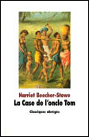
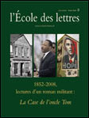
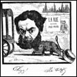
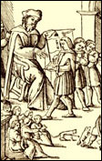
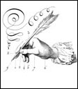

Dossier : La Case de l'oncle Tom
La Case de l'oncle Tom est liée à tout jamais à l'histoire de l'esclavage et à la guerre de Sécession aux États-Unis. Le martyre du pauvre Tom a été érigé par des générations de lecteurs au rang des mythes les plus importants du peuple noir. Mais lit-on encore l'ouvrage d'Harriet Beecher-Stowe pour ce qu'il est aussi : une grande et belle aventure ?
Roman contemporain
Sylvie, Parisienne de dix-sept ans, est sélectionnée pour un programme d'échange dans un lycée pilote de Chicago. Nous sommes en 1964, les États-Unis sont en pleins bouleversements sociaux et la ségrégation se pratique encore dans certains États. Martin Luther King « fait un rêve ». Des étudiants se lèvent pour défendre les droits civiques des Noirs, travaillent dans les ghettos et recherchent des volontaires. Sylvie est partante.

Histoire et littérature
La question de l'esclavage dans les programmes scolaires est une préoccupation assez récente dans l'enseignement. Il est cependant demandé depuis 2002 de prendre en considération la mémoire de la traite négrière, de l'esclavage et de leurs abolitions.

Le discours descriptif
Objectif. Étudier la description, ses variantes et ses constituants pour apprivoiser les mécanismes de l'écriture, être capable de les analyser, mais aussi de se les approprier en tant que lecteur et rédacteur. Supports : Les exervices proposés porteront essentiellement sur des extraits de L'Enfant, de Vallès.

Manipulations grammaticales
Toute analyse de phrase passe par la recherche du sujet. Ce travail de repérage est constant en classe de français ; il répond à une double intention : accorder le verbe comme il convient ; saisir le mouvement de la phrase pour la comprendre. Les critères de reconnaissance sont de trois ordres.

Témoignage
Quand un incident comique survient, une réponse fantaisiste, un geste maladroit, une perturbation quelconque, toute la classe se retourne pour observer ma réaction. Un inspecteur sait-il rire ?
Éducation à l'image et aux médias
Hans Belting a entrepris de construire une nouvelle « histoire des images » à travers les trois thèmes de l'image, du corps et du médium. Dans cet ouvrage, il s'intéresse au fait que les hommes veulent voir des images qui montrent la vérité, qui reproduisent la réalité telle qu'elle est. Il enquête sur notre rapport aux images en s'appuyant essentiellement sur l'histoire religieuse et sur celles des mentalités et de l'art.
Donnez-nous votre avis sur courrier@ecoledeslettres.fr